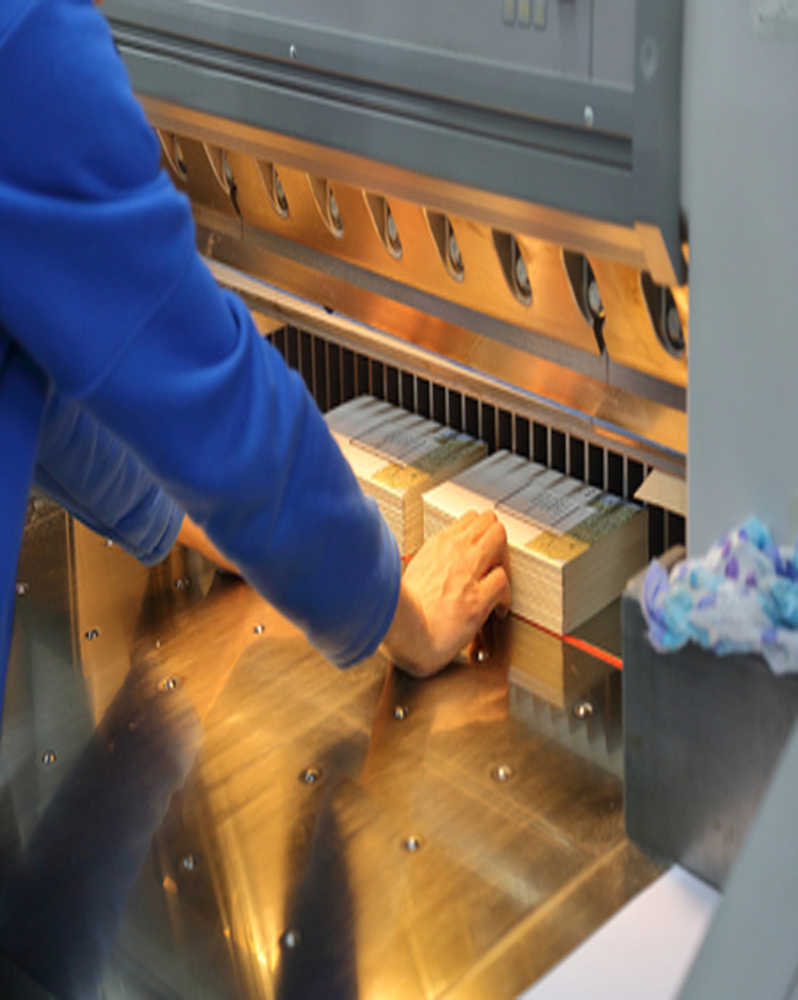

Compétences

Parcours
Professionnel
Professionnel

État civil

Formations

Logiciels
et languages
et languages
Imprimerie
- Règle de typographie
- Chaîne graphique
- Mise en page, Imposition
- Tout type de rogne sur massicot, entretient et changement de lame
Finition - Expédition
- Reliure, Mise en garde
- Taquage
- Pliage, Assemblage
- Emballage
- Gestion Expéditions (expérience chariot élévateur)
- Déplacement et filmage de palette (utilisation banderoleuse)
Signalétique
- Découpe, Pose d'adhésif (véhicule, site, support)
Personnel
- Communication, Travail d'équipe
- Gestion de projet
- Résistance au stress
- Assidu, Ponctuel
- Autonomie, Polyvalence
- Adaptation aux nouvelles technologies
- Tâche répétitive (longues périodes)
- Nettoyage, Rangement de poste